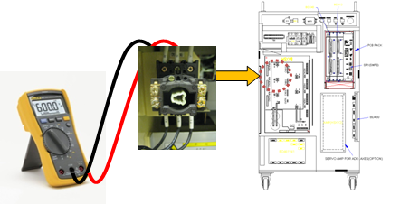
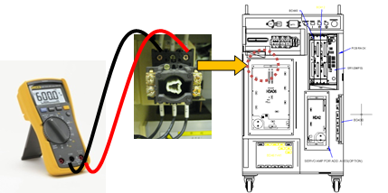
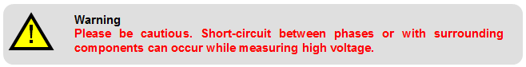

Please check the voltage on the rating plate and the actual input voltage.
Please check if the voltage of the controller's power supply is within the allowed voltage range as described on the rating plate. The allowed range of input voltage is within 10% of the described value on the rating plate, and it should be over 198 V (AC 220 V standard). The following describes how to measure the input voltage of the controller. If the measured voltage is out of the allowed range, please examine the power supply units.

Figure 5.68 Location of Hi4a-0000 Controller's Power Switch

Figure 5.69 Location of Hi4a-0010/0012 Controller's Power Switch
